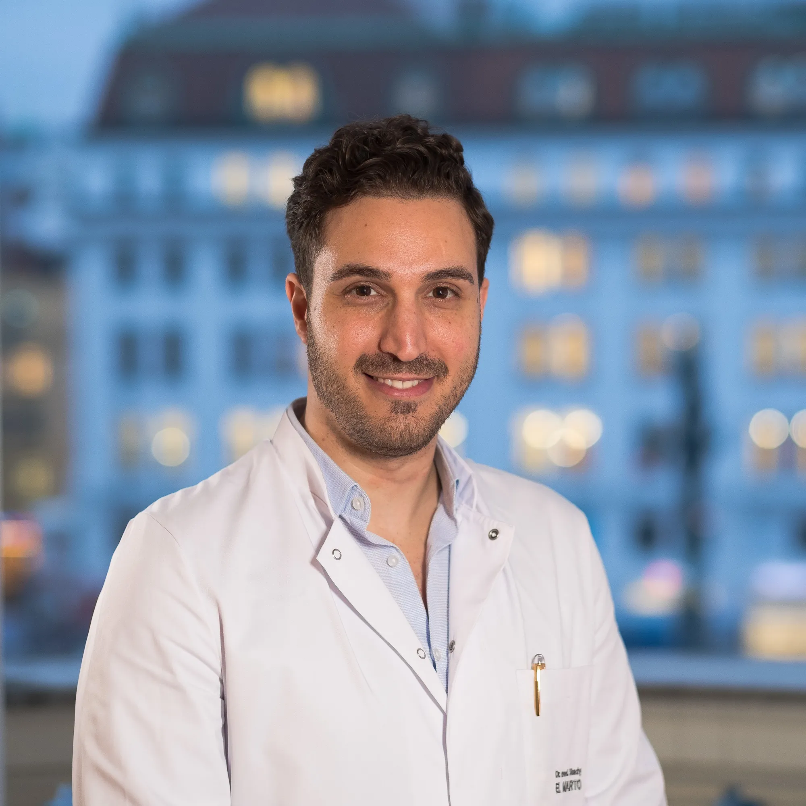
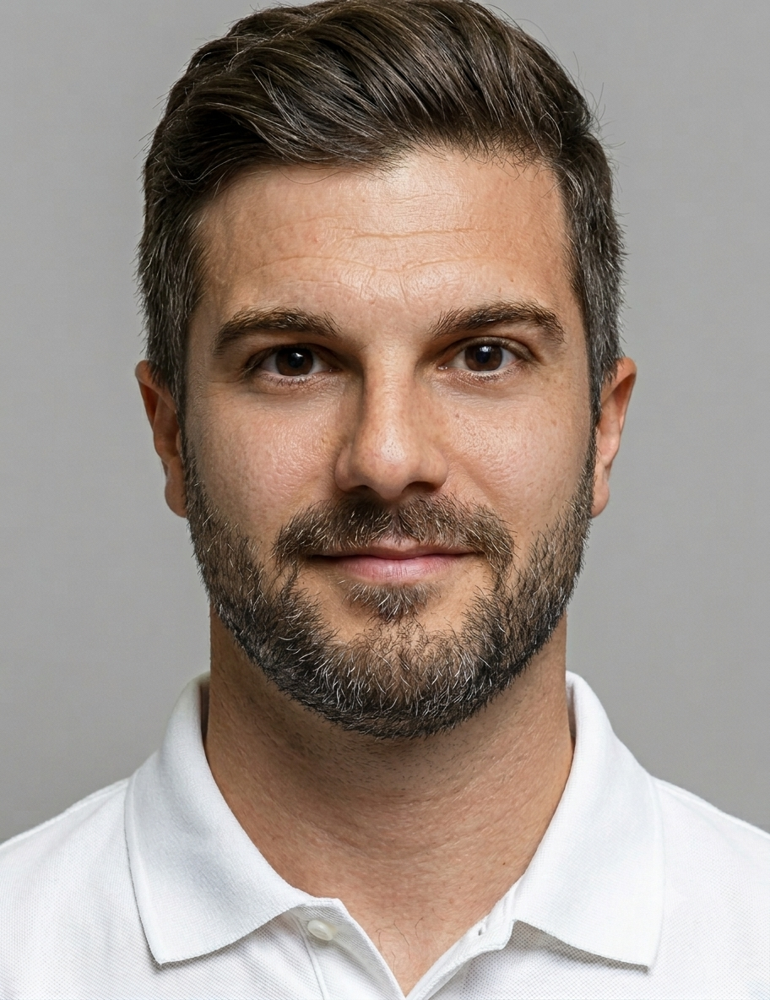
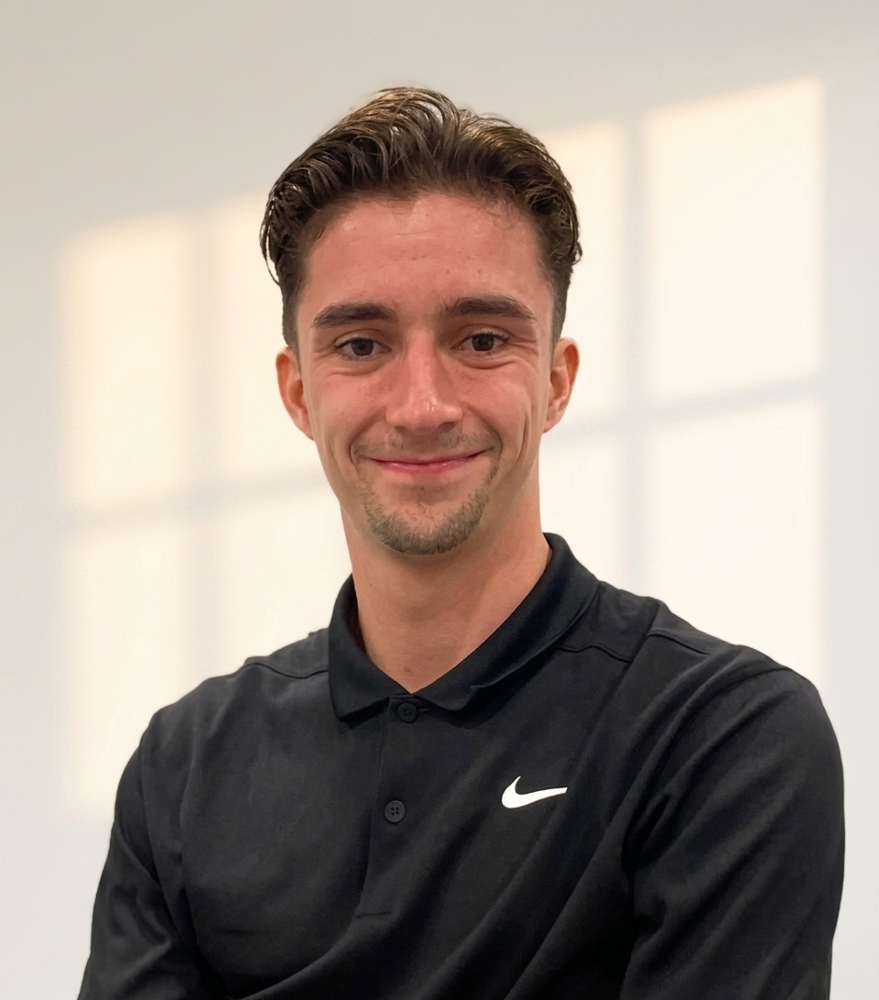
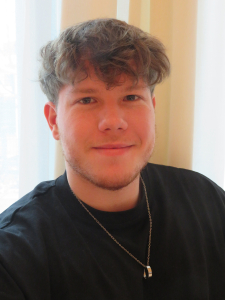

Experten für Ihre Gesundheit
Unser interdisziplinäres Team verbindet medizinische Spitzenexpertise mit modernster Therapie und individueller Betreuung – für Ihr rasches Comeback.

OA Dr. med. univ. Shady El Marto
FACHARZT FÜR UNFALLCHIRURGIE & ORTHOPÄDIE · KNIEEXPERTE · SPORTTRAUMATOLOGEOA Dr. med. univ. Shady El Marto zählt zu den führenden Spezialisten für Kniechirurgie in Wien, Sporttraumatologie sowie Orthopädie und Traumatologie. Als erfahrener Kniechirurg und Oberarzt am renommierten UKH Lorenz Böhler verbindet er höchste medizinische Expertise mit modernsten Behandlungsmethoden für Knieverletzungen und Knieerkrankungen. Darüber hinaus ist er Belegarzt an mehreren Privatkliniken in Wien sowie Mitgründer und Miteigentümer des Sports Medical Center VIENNA und des Med Center Vienna.
Seit 2010 widmet sich OA Dr. El Marto der Behandlung von Verletzungen und Erkrankungen des gesamten Bewegungsapparates. Mit mehr als einem Jahrzehnt klinischer und operativer Erfahrung sowie der Betreuung von über 3.000 Patientinnen und Patienten pro Jahr verfügt er über eine außergewöhnlich hohe Expertise in der Diagnostik, Therapie und Nachbehandlung orthopädischer und traumatologischer Beschwerden.
Spezialist für Kniechirurgie und Arthroskopie des Knies
Der Schwerpunkt seiner Tätigkeit liegt auf der Diagnose und Behandlung von Verletzungen und Erkrankungen des Kniegelenks. Als spezialisierter Kniechirurg in Wien führt OA Dr. El Marto sowohl konservative Therapien als auch moderne operative Eingriffe durch. Einen besonderen Stellenwert nimmt dabei die Arthroskopie des Knies ein – ein minimalinvasives Verfahren zur Behandlung von Meniskusschäden, Kreuzbandverletzungen, Knorpelschäden und anderen Kniebeschwerden.
Behandlung aller Gelenke und des gesamten Bewegungsapparates
Obwohl die Kniechirurgie einen zentralen Schwerpunkt darstellt, behandelt OA Dr. El Marto Beschwerden und Verletzungen sämtlicher großer und kleiner Gelenke des Körpers – Schulter, Hüfte, Sprunggelenk, Fuß, Handgelenk und Ellenbogen. Durch die hohe Anzahl an behandelten Fällen verfügt er über umfassende Erfahrung bei akuten Verletzungen, Sportverletzungen, Überlastungsschäden sowie degenerativen Veränderungen der Gelenke.
Behandlung von Knieverletzungen und Gelenkbeschwerden
Zu seinen Patientinnen und Patienten zählen Profisportler, ambitionierte Hobbysportler sowie Menschen jeden Alters, die ihre Mobilität, Leistungsfähigkeit und Lebensqualität verbessern möchten. Das Behandlungsspektrum umfasst Meniskusriss, Kreuzbandriss, Knorpelschäden, Patellainstabilität, Arthrose, Arthroskopie Knie, Schulter- und Sprunggelenksverletzungen sowie Sehnen- und Bandverletzungen.
Kniechirurg für Sportler und aktive Menschen
Als FIFA-Vertrauensarzt und Absolvent des FIFA Diploma in Football Medicine betreut OA Dr. El Marto regelmäßig Profi- und Leistungssportler. Die Betreuung von Spitzensportlern fließt unmittelbar in die Behandlung aller Patientinnen und Patienten ein – mit dem Ziel einer raschen Genesung und sicheren Rückkehr zu Sport, Beruf und Alltag.
Qualifikationen
- ✓ Facharzt für Unfallchirurgie
- ✓ Facharzt für Orthopädie & Traumatologie
- ✓ Oberarzt am UKH Lorenz Böhler
- ✓ FIFA-Vertrauensarzt & FIFA Diploma in Football Medicine
- ✓ Zertifizierter Notarzt für ganz Österreich
- ✓ Zertifizierter Wundmanager
- ✓ Belegarzt an der Privatklinik Döbling, der ATOMOS Klinik Währing sowie dem Evangelischen Krankenhaus Wien

Alexander Al Sarrag
SPORTWISSENSCHAFTLER · TRAININGSPLANERSportwissenschaft - Trainingsplanung
Eine besondere und höchst moderne Erweiterung der Nachbehandlung nach Verletzungen stellt mittlerweile die Sportwissenschaft dar. Was zumeist hauptsächlich Profisportlern in großen Vereinen zugänglich ist, erhalten unsere PatientInnen im Anschluss an die physikalische Therapie, um so einen individuellen Trainingsplan zu entwickeln.
Damit können unsere PatientInnen, nach Abschluss ihrer Behandlung anhand dieser Trainingsanleitung einen aktiveren Lebensstil beginnen und so zukünftige Verletzungen vermeiden. Daher erweitert ein Sportwissenschaftler unser Ordinationsteam. Er besitzt große Erfahrung aus dem österreichischen Profifußball und betreut aktuell einen der großen Wiener Clubs mit seiner Expertise.

Matthias Schmid
HEILMASSEUR · PHYSIKALISCHE THERAPIESchon früh entwickelte Matthias Schmid eine tiefe Leidenschaft für den menschlichen Körper, Bewegung und Gesundheit. Heute lebt er diesen Beruf mit echtem Engagement: Als staatlich geprüfter Heilmasseur arbeitet er Hand in Hand mit OA Dr. Shady El Marto und dem physiotherapeutischen Team – für eine individuelle, ganzheitliche Betreuung, die den Menschen in den Mittelpunkt stellt.
Sein Anspruch geht über schnelle Symptomlinderung hinaus. Gemeinsam mit seinen Patientinnen und Patienten erarbeitet er langfristige, nachhaltige Wege – ob in der Regeneration nach Verletzungen, in der aktiven Prävention, bei chronischen Schmerzzuständen oder als verlässlicher Begleiter im sportlichen Alltag.

Florian Düller
PHYSIOTHERAPEUT · REHABILITATION · SPORTPHYSIOTHERAPIEFlorian Düller zählt zu den erfahrenen Physiotherapeuten im Bereich Orthopädie, Sportphysiotherapie und Rehabilitation. Mit seiner fachlichen Expertise und seinem individuellen Behandlungsansatz begleitet er Patientinnen und Patienten nach Operationen, Sportverletzungen sowie bei Beschwerden des Bewegungsapparates auf dem Weg zurück zu voller Leistungsfähigkeit.
Besonders nach einer Knie-OP, Arthroskopie, Schulteroperation oder Verletzungen von Gelenken und Bändern spielt eine gezielte Physiotherapie eine entscheidende Rolle für den Behandlungserfolg. Durch die enge Zusammenarbeit mit behandelnden Ärzten und die Erstellung maßgeschneiderter Rehabilitationsprogramme unterstützt Florian Düller eine rasche und nachhaltige Genesung.
Unser Team freut sich auf Sie
Vereinbaren Sie noch heute einen Termin und lernen Sie unser Team persönlich kennen.
Termin Buchen →